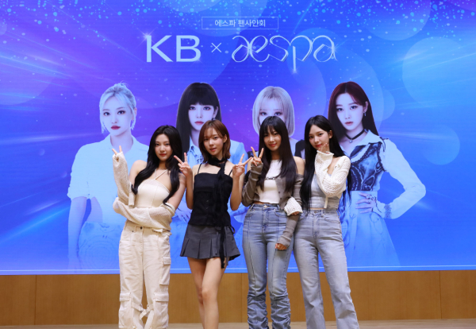

KB국민은행, 에스파 ‘고객 초청 팬 사인회’ 실시

KB국민은행이 지난 26일 리브 넥스트(Next) 광고모델 에스파를 초청해 KB국민은행 신관에서 팬 사인회를 실시했다고 27일 밝혔다.
이번 에스파 팬 사인회는 KB국민은행이 MZ세대와의 소통을 위해 마련한 행사다. 리브넥스트의 ‘하트모아 기부하기’ 이벤트를 통해 선정된 고객
60명을 대상으로 진행됐다. 팬 사인회 당일에는 당첨된 고객뿐만 아니라 KB국민은행 임직원 수백명이 에스파를 환영하기 위해 모여 인기를 실감했다.
KB국민은행은 다양한 퀴즈 이벤트와 포토존을 마련해 에스파를 보러 온 고객들에게 즐거움을 선사했다. 이날 에스파 멤버들은 KB국민은행 신관을
방문한 고객들과 개별적으로 인사를 나누며 친필 사인 및 기념촬영을 가졌다. 특히 이번 팬 사인회에서는 오는 28일 공개 예정인
KB국민은행의 웹드라마 ‘광야로 걸어가 2023 ’티저 영상이 최초 공개돼 관심을 끌었다. ‘광야로 걸어가 2023’은 지난해 인기리에
방영된 ‘광야로 걸어가’ 후속작으로 이번에 공개되는 ‘광야로 걸어가 2023’에서는 에스파가 특별 출연해 웹드라마의 기대감을
높일 예정이다. 에스파 멤버는 “KB국민은행 신관 건물에서 팬들과 만날 수 있어 새롭고 좋았다”며, “앞으로의 활동도 기대해달라”고
전했다. KB국민은행 관계자는 “웹드라마 공개 예정 기념으로 에스파와 팬 분들이 소통하고 즐거움을 선사할 수 있는 뜻 깊은
자리를 갖게 되어 대단히 기쁘다”며 “앞으로 공개되는 ‘광야로 걸어가 2023’ 웹드라마에도 많은 관심 부탁드린다”고 말했다.